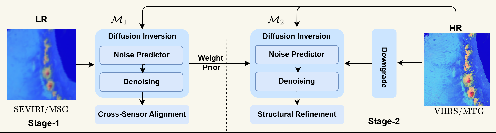
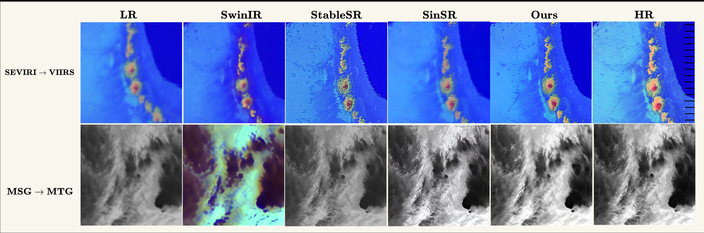
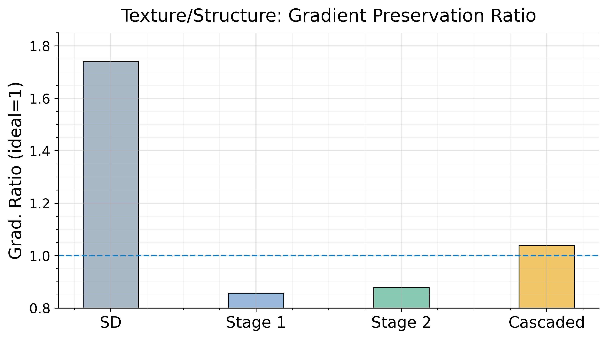

ICLR 2026 Workshop on Machine Learning for Remote Sensing
Recovering Cloud Microstructures with Cascaded Diffusion Inversion
1Mohamed Bin Zayed University of Artificial Intelligence | 2Hebrew University of Jerusalem | 3University of California, San Diego

Overview of the proposed two-stage framework. Stage 1 learns cross-sensor alignment from real paired data, and Stage 2 refines cloud structures using high-resolution supervision.
Abstract
High-resolution satellite imagery is important for observing fine-scale cloud structures that inform cloud microphysics analysis and weather-modification strategies. Existing super-resolution approaches are mostly designed for natural images and struggle to transfer to cross-sensor, multi-spectral cloud imagery. We propose a two-stage diffusion-based super-resolution framework that recovers high-resolution cloud microstructures by diffusion inversion.
Stage 1 trains on real paired data to learn robust degradation handling and inter-sensor alignment, while Stage 2 uses self-supervised downgrading of high-resolution data to refine structure and texture synthesis. Across both SEVIRI → VIIRS and MSG → MTG, the method improves reconstruction quality and visual fidelity over transformer and diffusion baselines.
Method
Stage 1: Cross-Sensor Alignment
The first stage is trained on real paired low- and high-resolution samples to learn a physically consistent mapping under temporal mismatch, geometric differences, and cross-sensor appearance shift.
Stage 2: Structural Refinement
The second stage uses high-resolution data with synthetic degradations so the supervision is perfectly aligned. This helps recover cloud filaments, boundaries, and fine-scale structures more reliably.
The main idea is to separate robust cross-sensor mapping from high-frequency structure recovery, then combine both stages in a cascaded inference pipeline.
Results
Qualitative Comparison

Compared with SwinIR, StableSR, and SinSR, the proposed method preserves sharper cloud structures while avoiding oversharpened artifacts.
Gradient Preservation

The cascaded setup moves closest to the ideal gradient preservation ratio of 1.0.
| Model | SEVIRI → VIIRS | MSG → MTG | ||||
|---|---|---|---|---|---|---|
| PSNR ↑ | Grad. ≈ 1 | Percep ↓ | PSNR ↑ | Grad. ≈ 1 | Percep ↓ | |
| SwinIR | 18.37 | 0.19 | 0.45 | 15.91 | 0.53 | 0.75 |
| StableSR | 20.52 | 1.72 | 0.44 | 18.71 | 2.94 | 0.42 |
| SinSR | 20.69 | 0.46 | 0.37 | 24.0 | 0.96 | 0.30 |
| Ours | 21.25 | 1.06 | 0.28 | 24.0 | 1.03 | 0.29 |
Citation
@inproceedings{gani2026recovering,
title = {Recovering Cloud Microstructures with Cascaded Diffusion Inversion},
author = {Gani, Hanan and Pulik, Guy and Rosenfeld, Daniel and Watson-Parris, Duncan and Khan, Salman},
booktitle = {ICLR 2026 Workshop on Machine Learning for Remote Sensing (ML4RS)},
year = {2026}
}